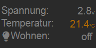

Der FHEM User Interface Painter (FUIP) ist ein FHEM-Modul, mit dem man FHEM Tablet UI (FTUI) Seiten graphisch ("klickibunti") erstellen kann. D.h. man kann sich ein UI zusammenklicken, welches die Tablet UI Technik verwendet, aber ohne sich selbst unbedingt mit HTML und CSS herumschlagen zu müssen.
Diese Dokumentation befasst sich vor Allem mit grundlegenden Erklärungen sowie der Bearbeitungsoberfläche. Zusätzlich gibt es noch einiges, was man über die "klassische" FHEM-Oberfläche (also FHEMWEB) machen kann bzw. muss. Dies ist dann vorwiegend in der "Device specific help" (bzw. Commandref) erklärt. D.h. dieser Text hier soll nicht die Commandref ersetzen, sondern ergänzen.
Installation und Upgrade in FHEM
Genau wie FTUI ist auch FUIP nicht automatisch Teil von FHEM. Es muss explizit installiert bzw. hinzugefügt werden. Die Installation funktioniert folgendermaßen:
FUIP verwendet FTUI. D.h. man sollte zuerst einmal FTUI installieren, falls noch nicht passiert. Wie das geht steht z.B. hier: FHEM Tablet UI. Dabei reicht der erste Schritt aus, da lediglich die FTUI-Dateien von FUIP benötigt werden.
Dann wird das FUIP-Repository zum FHEM Update hinzugefügt. Dazu muss man folgendes im FHEM-Kommandofeld eingeben:
Jetzt update all fuip im FHEM-Kommandofeld eingeben.
Dann sollte man warten, bis man ganz sicher ist, dass alles installiert ist. Das sieht man normalerweise an der Meldung update finished, "shutdown restart" is needed to activate the changes. Das ganze kann etwas länger dauern, da FUIP aus einigen Dateien besteht, von denen ein paar etwas größer sind.
Jetzt erst sollte ein shutdown restart gemacht werden.
FUIP sollte jetzt installiert sein.
Zum Upgrade reicht ein update, wenn man FUIP wie oben beschrieben installiert hat. Will man nur den FUIP-Teil aktualisieren und nicht alles in FHEM, dann geht das mit update all fuip.
Erste Schritte
Nach der Installation legt man ein "FUIP Device" an, also etwa define ui FUIP. Dieses Device meldet sich sozusagen als Webserver bei FHEM an (wie z.B. auch HTTPSRV), d.h. es erscheint im Menu oben links (über den Räumen) ein Link "ui". Beim Klick auf diesen Link generiert FUIP eine Übersichtsseite aus den Räumen im FHEM System. (Das kann ein bisschen dauern, wenn man viele Devices hat.) Nun kann man durch Verschieben und größer/kleiner-Ziehen der einzelnen Zellen bzw. durch Verschieben des Zelleninhalts die Gestaltung ändern. Außerdem kann man über das Zahnrad rechts oben in den Zellen neuen Inhalt hinzufügen, den bestehenden Inhalt ändern und vieles mehr.
Durch Klicken auf die Räume im Menu der Übersichtsseite werden einzelne Raum-Seiten generiert. Diese kann man ebenfalls entsprechend bearbeiten. Natürlich können auch eigene Seiten hinzugefügt werden.
Nachdem man die Seiten entsprechend bearbeitet hat sollte man im FHEM-Kommandofeld ein set ui save machen. Ansonsten gehen die Änderungen beim nächsten FHEM-Neustart verloren. Ein normales save config reicht nicht aus und ist auch nicht notwendig.
Was tun bei Problemen?
Falls es bei oder nach der Installation oder dem Upgrade Probleme gibt (welcher Art auch immer), sollten die folgenden Punkte geprüft werden:
Wird das richtige Repository benutzt? Man kann das mit update list überprüfen. Wenn der Eintrag für fuip nicht genau so aussieht wie oben beschrieben, dann sollte er per update delete gelöscht werden und dann genau so eingetragen werden wie oben beschrieben.
Ist der update-Prozess wirklich komplett durchgelaufen? Auch wenn es etwas länger dauert, muss man auf die Meldung update finished, "shutdown restart" is needed to activate the changes. warten, bevor man durchstartet. Im Zweifelsfall einfach noch einmal update all fuip machen und diesmal mehr Geduld haben.
FHEM braucht Schreibrechte im Verzeichnis <fhem>/FHEM/lib/FUIP/config (<fhem> steht meistens für /opt/fhem) und allen enthaltenen Dateien. Auf Betriebssystemebene (Linux) kann man das mit ls -ls überprüfen. Meistens kann es mit folgendem Befehl repariert werden: chown -R fhem:dialout /opt/fhem/FHEM/lib/FUIP/config. (Dieser Punkt gilt nicht unbedingt, wenn man die configDB benutzt.)
Bitte auch einmal im FHEM-Logfile nachsehen, bevor man sich ans Forum wendet.
Wenn man zwar die generierte (oder auch selbst erstellte) FUIP-Oberfläche sieht, aber alles hinter einem roten "Schleier" mit der Meldung "Disconnected from FHEM, reconnecting", dann könnten die folgenden Hinweise hilfreich sein.
Die Meldung deutet darauf hin, dass die Oberfläche zwar angezeigt werden kann, aber die Verbindung zur eigentlichen FHEM-Instanz verloren gegangen ist. Man sollte also prinzipiell überprüfen, ob die Verbdindung zwischen Browser und FHEM-Server stabil ist.
Man kann versuchen die Seite einmal neu zu laden (Browser-Reload) bzw. den Browser neu zu starten. Dies sollte allerdings nicht zur Gewohnheit werden. FUIP stellt die Verbindung im Prinzip selbständig wieder her.
Grundlegende Begriffe und Konzepte
Beispiel für eine FUIP-Seite
Seite (Page)
Eine Seite ist in FUIP das, was man normalerweise darunter im Internet versteht. Im Zusammenhang mit FUIP wird auch von FUIP-Seite geredet, wenn eine Seite gemeint ist, die mittels FUIP erzeugt wird. Normalerweise gehören zu einem FUIP-Device mehrere Seiten. FUIP erzeugt also keine "Single Page Website" oder "Single Page Application".
Wenn der Benutzer im Bearbeitungsmodus versucht, eine FUIP-Seite aufzurufen, die es nicht gibt, dann wird diese Seite von FUIP generiert. (D.h. so kann man eine neue Seite anlegen.) Dabei gibt es im Prinzip drei Möglichkeiten:
Es wird eine Index- oder Home-Seite erstellt. Das ist der Fall, wenn die URL auf /fhem/<fuip-device>/ oder /fhem/<fuip-device>/page/home endet. Diese Seite enthält dann eine Übersicht mit allen mehr oder weniger sinnvoll darstellbaren Devices aus der FHEM-Instanz, geordnet in die jeweiligen Räume. Dazu kommt noch ein Menü mit einem Home-Link und weiteren Links zu allen Räumen sowie eine Titelzeile und eine Uhr.
Es wird eine Raum-Seite erstellt. Das ist der Fall, wenn die URL auf /fhem/<fuip-device>/page/room/<raumname> endet. Dabei ist es erst einmal egal, ob es tatsächlich den betreffenden Raum in FHEM gibt. Es wird eine Seite mit dem Menü, der Titelzeile und der Uhr generiert. Wenn es den betreffenden Raum tatsächlich gibt, dann werden die Devices dieses Raums dargestellt.
Es wird eine fast leere Seite erstellt. Das ist der Fall, wenn die URL auf /fhem/<fuip-device>/page/<seitenname> endet. Der Name der Seite ist dabei im Prinzip egal, wobei bisher noch nicht jede Schweinerei Kombination von Sonderzeichen ausprobiert wurde. Die generierte Seite ist nicht ganz leer. Sie enthält eine leere Zelle, da man sonst das Konfigurations-Popup nicht aufrufen könnte. Das würde bedeuten, dass man mit der Seite überhaupt nichts machen könnte.
Tipp: Falls man die generierten Seiten überhaupt nicht brauchen kann, dann kann man sich größere Löschorgien sparen, indem man sich erst einmal eine neue Seite macht, die so aussieht, wie man sich das wünscht. Diese Seite kopiert man dann einfach auf die Seite "home". Damit ist die generierte Startseite verschwunden. Genauso kann man mit den einzelnen Raum-Seiten verfahren. Man kann letztere aber auch einfach ignorieren.
Die oben beschriebene Generierung neuer Seiten bewirkt, dass man mit FUIP von Anfang an ein Gerüst von Seiten mit allen Devices als Inhalt hat. Man darf von den generierten Seiten nicht allzu viel erwarten. Man sollte sie nur als Startpunkt sehen, von dem aus man dann seine eigene Oberfläche zusammenklicken kann. Insbesondere kann man am Anfang die generierten FUIP-Seiten als Übungsfeld benutzen. Später wird man eigene Kopiervorlagen haben, die man stattdessen benutzt.
Das Beispiel einer FUIP-Seite im Bild neben dem Text zeigt übrigens keine von FUIP generierte Seite. Die Seite ist aber aus einer generierten Seite mit relativ wenig Bearbeitung entstanden.
Zelle
Eine Zelle im Bearbeitungsmodus
FUIP-Seiten bestehen zuerst einmal aus Zellen. Im Beispiel einer FUIP-Seite auf dem Bild weiter oben sieht man, dass die Seite offensichtlich in einzelne Kästchen eingeteilt ist. Diese Kästchen sind die Zellen in FUIP. Eine FUIP-Seite muss aus mindestens einer Zelle bestehen, kann aber auch viele Zellen haben. (Zumindest scheint es keine praxisrelevante Obergrenze zu geben.)
Im Bearbeitungsmodus können Zellen mit der Maus positioniert werden durch "Anfassen" an der Titelzeile. Die Größe kann durch "Anfassen" an der rechten unteren Ecke der Zelle geändert werden. Allerdings sind Position und Größe einer Zelle nicht komplett frei festzulegen. Die Position einer Zelle hängt auch vom Gesamtlayout ab sowie von den Positionen und Abmessungen der anderen Zellen. Außerdem können Breite und Höhe einer Zelle nur ein Vielfaches (in etwa) einer Basisbreite bzw. Basishöhe annehmen. (Siehe auch die Dokumentation zu den Attributen layout, baseWidth und baseHeight des FUIP-Device in FHEM.)
Über das Zahnrad-Icon rechts oben in der Zelle öffnet man das Konfigurations-Popup der Zelle. Dort kann man den Inhalt der Zelle bestimmen und konfigurieren. Außerdem erreicht man von dort fast alle weiteren Bearbeitungsfunktionen. Weitere Informationen dazu gibt es im Kapitel zum Konfigurations-Popup.
View
Auf dem "Beispiel für eine FUIP-Seite" weiter oben sieht man verschiedene Inhalte der Zellen. Alle diese Inhalte bestehen aus einer oder mehreren View(s). Eine View stellt oft die Sicht auf ein Device in FHEM oder sogar nur ein einzelnes Reading dar. Ein Beispiel dafür ist die SimpleSwitch View (die Lämpchen auf dem Beispielbild) oder auch die ShutterControl View (die Rollladensteuerung). Andere Views zeigen mehrere Devices, die irgendwie zusammengehören. So kann z.B. die Thermostat View Daten von mehreren Heizungsthermostaten (Stellantrieben) und Wandthemostat zusammen anzeigen. Die Batteries View zeigt sogar eine ganze Liste von Devices mit Batterien an. Es gibt auch Views, die gar keinen Bezug zu einem FHEM-Device haben. Dazu gehören z.B. die Uhr (die Clock View) oder auch die Title View. In diese Kategorie fällt normalerweise auch die MenuItem View.
Views werden in der Regel im Konfigurations-Popup einer Zelle (oder einem Dialog oder einem View Template) hinzugefügt. Einzelheiten dazu findet man im Kapitel zum Konfigurations-Popup. Die Position und oft auch die Größe der Views legt man dann durch Drag&Drop bzw. Ziehen mit der Maus fest. Man kann sogar eine View von einer Zelle in eine andere ziehen. Die folgenden Parameter werden von fast allen Views unterstützt. Daher werden diese Parameter nur einmal hier beschrieben und nicht bei jeder View einzeln.
View type (oder auch "class")
Dies ist der Typ (bzw. die "Klasse") der View. Der View-Typ bestimmt die Funktionalität der View, welche Parameter sie hat und wie sie auf der Oberfläche aussieht.
title
Dies ist sozusagen die Überschrift der View-Instanz. Dieser Titel wird in der Regel nur auf dem Konfigurations-Popup verwendet. Normalerweise taucht dieses Feld nirgends auf der Oberfläche selbst auf.
label
Das "Label" einer View ist ein kurzer beschreibender Text, der normalerweise links oder unten in der View angezeigt wird. Es wird z.B. vor einem Reading oder unter einem Symbol angezeigt. Normalerweise kann man das Label auch weglassen, indem man es einfach leer lässt. Die meisten Views, die ein Label haben, setzen per Default den Namen des Device oder ähnliches. Nicht alle Views haben ein Label.
sizing
Dieser Parameter bestimmt, wie die Größe der View ermittelt wird. Dazu gibt es prinzipiell drei verschiedene Mechanismen: fixed, resizable und auto:
fixed: Die View berechnet selbst ihre Breite und Höhe. Oft ist die Größe dann tatsächlich "fix", sie kann aber auch von der Konfiguration der View abhängen.
resizable: Man kann die Größe frei einstellen. Es erscheinen dann zwei Felder zum Eingeben von Breite und Höhe auf dem Konfigurations-Popup. Außerdem kann die rechte untere Ecke der View mit der Maus "gezogen" werden.
auto: Die View nimmt automatisch den kompletten Platz bis zur rechten unteren Ecke der Zelle (oder des Popups oder des View Templates) ein. D.h. die Größe wird nur durch die Position der View bestimmt. Im Flex-Layout kann sich die View auch an Zellen flexibler Größe anpassen.
Nicht alle Views unterstützen alle drei Sizing-Mechanismen.
popup
Hiermit kann ein Popup angelegt werden, welches durch Klick auf die View geöffnet wird. Wird die Checkbox (der "Default-Haken") aktiviert, dann erscheint ein Button, über den das Popup bearbeitet werden kann. Ein Popup (oder auch "Dialog" erscheint auf der Bearbeitungsoberfläche wie eine FUIP-Seite mit einer einzigen Zelle.
Popup (Dialog)
Ein Popup ist in FUIP das, was man sich normalerweise darunter vorstellt. Wenn das auslösende Element angeklickt wird, dann erscheint ein Dialogfenster, welches man dann manuell wieder schließen kann. Man kann auch eine Zeit einstellen, nach der der Dialog von selbst wieder verschwinden soll. Fast jede View kann bei FUIP "auslösendes Element" für ein Popup sein.
Von der Bearbeitung her ähneln sich Popups und Zellen sehr. Ein Popup enthält wie eine Zelle Views, die frei positioniert werden können. Auch alle anderen Eigenschaften der Views sind gleich. Die Gröszlig;e des Popups selbst kann allerdings pixelgenau eingestellt werden. Views auf Popups haben auch die Möglichkeit, selbst wieder ein Popup zu erzeugen. D.h. Popups in Popups sind (zumindest technisch) kein Problem.
Das Konfigurations-Popup
Das Konfigurations-Popup
Auf den Konfigurations-Popups oder auch Konfigurations-Dialogen legt man hauptsächlich den Inhalt der betreffenden Elemente fest. D.h. man kann hier Views hinzufügen und löschen sowie die Views konfigurieren. Die Positionierung der Views erfolgt dann direkt auf der Oberfläche mittels Drag&Drop.
Man erreicht das Konfigurations-Popup durch Klick auf die kleinen Zahnräder oben rechts in jeder Zelle bzw. oben rechts neben dem Dialog (Popup) oder dem View Template auf den entsprechenden Bearbeitungsoberflächen. Dort "erforscht" man dann am Besten die verschiedenen Funktionen durch Mausklick oder Tabulator-Taste. Für die meisten Elemente in den Konfigurationsdialogen erscheinen dann Hilfetexte. (Buttons und manche andere Elemente muss man mittels Tabulatortaste in den Fokus holen, um deren Hilfetext zu sehen.) Bei inaktiven Feldern muss man ggf. auf den Text vor dem Feld klicken.
Viele Felder auf den Konfigurationsdialogen verfügen über eine Werthilfe (die Tasten mit den kleinen Dreiecken rechts neben dem Feld). Manche Felder können sogar nur über die Werthilfe gefüllt werden, wie z.B. der View type. Es wird zwar empfohlen, Felder mit Werthilfe vorwiegend über die Werthilfe zu füllen, man kann aber bei den meisten Feldern mit Werthilfe auch eine manuell Eingabe machen, die nicht unbedingt einem Vorschlag der Werthilfe entsprechen muss. Dies ist in einigen (wenigen) Fällen sogar sinnvoll.
Der "Default-Haken"
Manche Views haben Parameter, die normalerweise nicht verändert werden müssen bzw. für die bereits (Default-)Werte vorgegeben werden. Diese Parameter sind erst einmal nicht eingabebereit und sie können auch nicht über die Werthilfe verändert werden. Es gibt in FUIP im Prinzip zwei Möglichkeiten, wie der Default-Wert ermittelt wird:
Ein konstanter Wert: Dieser Wert ist immer gleich, wie z.B. beim Parameter icon auf dem Beispielbild zum Konfigurations-Popup.
Ein Wert, der von einem anderen Parameter abhängt: Meistens wird dieser Wert einfach von einem anderen Feld übernommen. Ein Beispiel ist title im Bild links. Der Wert wird von device übernommen. Wenn man das "Quellfeld" ändert, dann ändert sich automatisch das abhängige Feld mit. Dieser Mechanismus kann auch über mehrere Stufen gehen.
Um von der Vorgabe abweichende Werte einzugeben, muss man zuerst das Ankreuzfeld (die Checkbox) vor dem Feld selbst setzen. Dann wird das Feld eingabebereit und die Default-Ermittlung wird für dieses Feld abgeschaltet. Man kann das Ankreuzfeld auch wieder deaktivieren und so den Default-Mechanismus wieder einschalten.
Wenn eine Zeile auf dem Konfigurations-Popup aus mehreren Feldern besteht, dann sind das meistens Device-Reading-Kombinationen. D.h. in das erste Feld wird ein FHEM-Device eingegeben und im zweiten Feld wird ein Reading des Device im ersten Feld erwartet. Die Werthilfe des Reading-Felds zeigt dann auch nur Readings des zugehörigen Device an. Der Default-Mechanismus funktioniert für beide Felder getrennt. D.h. beide Felder haben ihren eigenen "Default-Haken".
View Templates
Tipp: Wer gerade mit FUIP angefangen hat, der wird Abschnitt über View Templates möglicherweise verwirrend finden. Nachdem man selbst ein paar FUIP-Seiten angelegt und bearbeitet hat, sollte man hierher zurückkehren und diesen Abschnitt lesen.
Ein View Template ist eine benutzerdefinierte View. D.h. man kann sich aus bestehenden Views eigene View Templates zusammenklicken, die man dann wiederum wie normale Views (eigentlich View-Typen) verwenden kann. Das ist ganz nützlich, wenn man immer (oder oft) dieselbe Ansicht für z.B. Thermostate hat. Das definiert man sich dann einmal als View Template und verwendet es immer wieder. Ein View Template bearbeitet man im Wesentlichen wie eine normale Zelle bzw. einen Dialog (ein Popup). Zusätzlich kann man auf dem Konfigurations-Popup Felder als Variablen kennzeichnen und benennen. Dadurch ensteht dann ein neuer View-Typ mit diesen Variablen als Parameter. Die View Templates kann man dann beim Bearbeiten einer Zelle wie einen normalen View auswählen. Das geht auch in View Templates selbst, man kann also auch View Templates in View Templates verwenden.
Ein gutes Beispiel für ein View Template ist ein Menü. Die Menüs auf verschiedenen FUIP-Seiten sehen oft im Prinzip gleich aus. Wenn man das Menü zu einem View Template macht, dann kann man z.B. beim Entstehen eines neuen Menüpunkts einfach das View Template ändern und der neue Menüpunkt erscheint automatisch überall.
Die Bearbeitungsoberfläche für View Templates erreicht man über das Menü im Konfigurations-Popup für Zellen und Seiten. Man sieht dann eine Übersicht, die in etwa so aussieht wie im Bild rechts. (Der Inhalt und die Farben können natürlich abweichen.) Links sieht man eine Liste, die anfangs nur die drei ersten Punkte enthält. Diese ersten drei Punkte sind Links, hinter denen sich die folgenden Funktionen verbergen:
Show all springt zur Übersicht (diese Seite) zurück.
Create new legt ein neues View Template an. Dabei wird nach einem (neuen) Namen gefragt. Der Name eines View Templates darf nur aus normalen Buchstaben (a-z, A-Z), Ziffern (0-9) und dem Unterstrich (_) bestehen.
Import importiert ein View Template aus einer Datei, die vom Client hochgeladen wird. Das View Template wird im Prinzip mit dem in der Datei gespeicherten Namen angelegt. Wenn schon ein View Template mit demselben Namen existiert, dann wird ein Suffix an den Namen angehängt.
Einzelnes View Template
Unter diesen drei Punkten folgt die Liste der bereits existierenden View Templates. Um eines der View Templates zu bearbeiten klickt man auf den entsprechenden Eintrag. Außerdem sieht man auf der Übersichtsseite Vorschaubilder für alle View Templates. Man kann auch auf das jeweilige Bild klicken, um das View Template zu bearbeiten.
Die Bearbeitungsoberfläche für ein einzelnes View Template sieht recht ähnlich aus. Die Liste links ist dieselbe wie in der Übersicht. In der Mitte sieht man das View Template selbst mit ein paar Tasten (Buttons). Rechts daneben ist ein Verwendungsnachweis (Where-Used List), bei dem sowohl Seiten (Pages) als auch andere View Templates vorkommen können. Die Einträge dieser Liste sind Links, so dass man direkt an die entsprechende Stelle navigieren kann.
Die Tasten haben die folgende Bedeutung:
Settings ruft das Konfigurations-Popup auf. Das Konfigurations-Popup ist im Prinzip dasselbe wie für Zellen, nur ohne das Menü.
Arrange Views entspricht derselben Funktion bei Zellen. D.h. die einzelnen Views werden einigermaßen sinnvoll angeordnet.
Export speichert das View Template in eine Datei auf dem Client. Dies ist vor Allem sinnvoll, um View Templates in anderen FUIP-Instanzen zu benutzen. Man kann eine Export-Datei auch in einer ganz anderen FHEM-Instanz importieren. Insbesondere kann man damit eigene View Templates an andere Leute weitergeben.
Rename benennt ein View Template um. Dabei werden auch alle Verwendungen beachtet. D.h. durch das Umbenennen geht nichts kaputt. Es sind die beim "Create new" weiter oben beschriebenen Einschränkungen auch beim neuen Namen zu beachten. Man kann mit "Rename" keine existierenden View Templates überschreiben. Wenn man das will, muss man das andere View Template vorher löschen.
(Da es in JQuery-UI kein gutes "Umbenennen"-Icon gibt, hat die zugehörige Taste einfach ein "R" für "Rename".)
Delete löscht das View Template. Falls das View Template noch verwendet wird erfolgt eine Fehlermeldung und man kann es nicht löschen.
Man kann auch ein View Template aus einer bestehenden Zelle machen. (Ebenfalls über das Menü im Konfigurations-Popup.) Dadurch entsteht ein View Template, das so wie die Zelle aussieht. Dies ist wahrscheinlich der häufigste Weg, ein View Template zu erzeugen, da man anfangs meist noch nicht weiß, dass ein View Template an einer bestimmten Stelle sinnvoll ist.
Auf dem Konfigurations-Popup für View Templates kann man fast alle Parameter als "Variable" definieren. Das funktioniert insbesondere für die Parameter der verwendeten Views. Dafür gibt es rechts neben dem jeweiligen Parameter ein Ankreuzfeld (Checkbox), mit der man die Variable aktiviert. Es wird der Name des Parameters selbst als Variablenname vorgeschlagen, man kann aber auch einen eigenen Namen eingeben. Der Name einer Variable darf nur aus normalen Buchstaben (a-z, A-Z), Ziffern (0-9) und dem Unterstrich (_) bestehen. Außerdem sind die folgenden Namen reserviert und dürfen nicht verwendet werden: class, defaulted, flexfields, height, id, sizing, templateid, title, variable, variables, views, width.
Wenn man ein View Template mit Variablen (z.B. in einer Zelle) verwendet, dann erscheinen die Variablen genau so wie die Parameter einer "normalen" View. Zusammen mit den "flexiblen Feldern" der HTML-View kann man sich auf diese Art fast jede mögliche View zusammenbasteln.
Die Views
Die leere View
Die "leere" View wird im Konfigurationsdialog vorbelegt, wenn eine neue View hinzugefügt wird. Man ersetzt dann den View type durch das, was man eigentlich haben will. Ansonsten kann man die leere View theoretisch als Platzhalter verwenden oder wenn man nur einen kurzen Text darstellen will. Außer View type und title hat die leere View nur ein Feld. (Sie ist also eigentlich gar nicht so leer.)
content Hier kann ein kurzer Text eingegeben werden, der dann auf der Oberfläche angezeigt wird. Allerdings kann man keinerlei Formatangaben mitgeben (wie Größe, Farbe etc.).
7SegmentClock: 7-Segment-Display clock
Diese View zeigt eine Digitaluhr im 7-Segment-Design an.
Es wird die Client-Zeit (also die Zeit des Browsers) angezeigt. Die View 7SegmentClock lässt sich über die folgenden Felder konfigurieren: title, seconds, color, sizing, popup.
7SegmentClock - seconds Dieser Parameter steuert, ob man nur Stunden und Minuten oder
auch Sekunden sieht.
7SegmentClock - color Farbe der Anzeige.
Es können insbesondere die "FUIP-Farbsymbole" ausgewählt werden, so dass die Anzeige zum Rest der Oberfläche passt. Ansonsten kann man so ziemlich alles eingeben, was CSS als Farbe erlaubt.
7SegmentReading: 7-Segment-Display (Reading)
Es wurde keine spezifische Dokumentation gefunden.
Eine View im Allgemeinen ist in FUIP eine zusammenhängende Sicht auf die Daten z.B. eines Devices in FHEM. Man kann eine View normalerweise frei in einer Zelle (oder einem View Template oder auf einem Popup) frei positionieren. Außerdem kann eine View mittels vom View-Typ abhängiger Parameter konfiguriert werden. Die View 7SegmentReading lässt sich über die folgenden Felder konfigurieren: reading, title, digits, decimals, colorscheme, color, sizing, popup.
Batteries: Liste der Batterien
Diese View zeigt eine Liste der batteriebetriebenen Geräte mit den aktuellen Ladeständen an. Dazu werden alle FHEM-Devices mit den Readings battery, batteryLevel, batVoltage, batteryPercent und Activity gesucht und in einer Liste dargestellt. Devices, für die das Attribut ignore auf einen Wert ungleich 0 gesetzt ist, werden ignoriert. Je nachdem, was bei den einzelnen Devices möglich ist, wird ein Batterie-Icon erzeugt, welches den Zustand der Batterie zeigt sowie ein Spannungs- oder Prozentwert und eine alive/dead-Angabe für Devices mit dem Reading Activity. Die View Batteries lässt sich über die folgenden Felder konfigurieren: title, deviceFilter, exclude, sizing, columns, labelRule.
Batteries - deviceFilter Hier kann angegeben werden, ob auch Devices angezeigt werden sollen, die das Reading Activity haben, aber gar nicht batteriebetrieben sind. Es gibt zwei mögliche Werte:
all: Es werden alle Devices angezeigt, auch solche, die nur das Reading Activity haben.
battery: Es werden nur die Devices angezeigt, die (mindestens) eins der Batterie-Readings haben. Es wird dann für diese Devices trotzdem "dead" oder "alive" angezeigt, wenn sie das Activity Reading haben.
Batteries - exclude Hier kann eine Liste von Devices angegeben werden, die normalerweise von der Batteries-View angezeigt würden. Diese werden dann nicht angezeigt. In der zugehörigen Werthilfe werden nur Devices angezeigt, die normalerweise von der View gefunden werden.
Batteries - columns Hier kann man angeben, ob die Liste in einer, zwei, drei oder vier Spalten ausgegeben werden soll. Es ist empfehlenswert, mit dieser Angabe im Zusammenhang mit dem Parameter sizing etwas zu experimentieren, bevor man sich festlegt.
Batteries - labelRule Normalerweise wird der Text (das Label) zu jedem Device in der Liste vom Attribut alias genommen, falls dieses Attribut gesetzt ist. Ansonsten wird der Device-Name (das Internal NAME) benutzt. Mit dem Parameter labelRule kann man das ändern. Man gibt hier eine Komma-separierte Liste von Attributen, Internals und/oder Readings ein. Dann sucht die View für jedes Device nach dem ersten Eintrag, für den tatsächlich etwas gesetzt ist. Man sollte NAME normalerweise immer als letztes in der Liste haben, um keine Einträge in der Liste ohne Text zu erzeugen.
Hat man z.B. Devices, bei denen der "sinnvolle" Name im Internal name steht und andere, für die das Attribut alias gefüllt ist, dann kann man labelRule mit "name,alias,NAME" oder "alias,name,NAME" füllen, je nachdem ob name oder alias höhere Priorität hat.
Brightness: Brightness
Es wurde keine spezifische Dokumentation gefunden.
Eine View im Allgemeinen ist in FUIP eine zusammenhängende Sicht auf die Daten z.B. eines Devices in FHEM. Man kann eine View normalerweise frei in einer Zelle (oder einem View Template oder auf einem Popup) frei positionieren. Außerdem kann eine View mittels vom View-Typ abhängiger Parameter konfiguriert werden. Die View Brightness lässt sich über die folgenden Felder konfigurieren: brightness, title, label, min, max, popup.
Calendar: Kalender (experimentell)
Diese View ist eine einfache Darstellung eines Kalenders.
Es wird immer eine ganze Woche angezeigt. Die Anzeige basiert auf Calendar-Devices in FHEM. Die View Calendar lässt sich über die folgenden Felder konfigurieren: device, title, sizing.
Calendar - device Hier gibt man ein oder mehrere Calendar-Devices an. Es werden die Termine aus allen ausgewählten Kalendern angezeigt.
Chart: Chart from SVG
Es wurde keine spezifische Dokumentation gefunden.
Eine View im Allgemeinen ist in FUIP eine zusammenhängende Sicht auf die Daten z.B. eines Devices in FHEM. Man kann eine View normalerweise frei in einer Zelle (oder einem View Template oder auf einem Popup) frei positionieren. Außerdem kann eine View mittels vom View-Typ abhängiger Parameter konfiguriert werden. Die View Chart lässt sich über die folgenden Felder konfigurieren: device, title, sizing, timeranges, popup.
Clock: Eine Uhr mit Anpassung an die Server-Zeit
Es wurde keine spezifische Dokumentation gefunden.
Eine View im Allgemeinen ist in FUIP eine zusammenhängende Sicht auf die Daten z.B. eines Devices in FHEM. Man kann eine View normalerweise frei in einer Zelle (oder einem View Template oder auf einem Popup) frei positionieren. Außerdem kann eine View mittels vom View-Typ abhängiger Parameter konfiguriert werden. Die View Clock lässt sich über die folgenden Felder konfigurieren: title, sizing, popup.
Colorwheel: Farbauswahl
Farbauswahl im RGB-Format
Mit der View Colorwheel kann man Geräte steuern, die Farben im RGB-Format akzeptieren bzw. bereitstellen, wie z.B. Hue-Leuchten. Die View entspricht ungefähr dem FTUI-Widget "colorwheel", wobei FUIP eine eigene Implementierung bereitstellt, die beim Sizing flexibler ist. Die View Colorwheel lässt sich über die folgenden Felder konfigurieren: device, title, label, set, reading, sizing.
Colorwheel - device Das Device, auf das sich die Farbauswahl bezieht. Das kann z.B. eine Leuchte vom Typ HUEDevice sein.
Colorwheel - label Der hier eingetragene Text erscheint unter der Farbauswahl, also am unteren Rand der View. Man kann das Label auch leer lassen.
Colorwheel - set Set-Option, die eine Farbe im RGB-Hex-Format akzeptiert.
Beim Setzen der Farbe ruft die View folgenden FHEM-Befehl auf: set <device> <set> RRGGBB. Defaultwert ist "rgb". Bei Hue-Leuchten ergibt sich also normalerweise so etwas wie set myHueDevice rgb FF0000, wenn man die Lampe auf Rot setzt.
Colorwheel - reading Reading, welches die aktuelle Farbe im RGB-Hex-Format enthält.
Defaultwert ist das, was bei set eingetragen wurde.
DwdWebLink: DWD_OpenData_Weblink
Es wurde keine spezifische Dokumentation gefunden.
Eine View im Allgemeinen ist in FUIP eine zusammenhängende Sicht auf die Daten z.B. eines Devices in FHEM. Man kann eine View normalerweise frei in einer Zelle (oder einem View Template oder auf einem Popup) frei positionieren. Außerdem kann eine View mittels vom View-Typ abhängiger Parameter konfiguriert werden. Die View DwdWebLink lässt sich über die folgenden Felder konfigurieren: device, title, sizing, popup.
HomeButton: Home Button
Es wurde keine spezifische Dokumentation gefunden.
Eine View im Allgemeinen ist in FUIP eine zusammenhängende Sicht auf die Daten z.B. eines Devices in FHEM. Man kann eine View normalerweise frei in einer Zelle (oder einem View Template oder auf einem Popup) frei positionieren. Außerdem kann eine View mittels vom View-Typ abhängiger Parameter konfiguriert werden. Die View HomeButton lässt sich über die folgenden Felder konfigurieren: text, title, linkType, link, pageid, device, reading, icon, active, sizing.
Html: Alles, was mit HTML geht
Diese View kann praktisch beliebiges HTML enthalten. Es ist auch erlaubt, CSS und JavaScript zu verwenden. Allerdings sollte man sicherstellen, dass man dabei keine allzu groben Fehler macht. Syntaxfehler und ähnliches werden abgefangen, aber man kann damit auch großen Blödsinn anstellen.
Im HTML-Text können spezielle Elemente verwendet werden, um sogenannte "flexible Felder" zu erzeugen. Diese werden dann zu Parametern, die auf dem Konfigurations-Popup durch eingegebene Werte ersetzt werden können. Dies ist insbesondere im Zusammenhang mit View Templates interessant, wo man auch aus "flexiblen Feldern" Variablen machen kann. Die View Html lässt sich über die folgenden Felder konfigurieren: title, html, sizing, popup.
Html - html Hier wird der HTML-Text eingegeben. (Man kann das Feld auch größer ziehen.)
Außer normalem HTML (mit CSS und JavaScript) kann man mit dem Pseudo-Tag fuip-field "flexible Felder" definieren. Man kann z.B. folgendes in den HTML-Text einfügen: <fuip-field fuip-name='device' fuip-type='device'>somedevice</fuip-field>
Das kann man im HTML tatsächlich überall hinschreiben und nicht nur da, wo es normalerweise in HTML möglich wäre. Nach dem nächsten Öffnen des Konfigurations-Popups erscheint "device" mit dem Wert "somedevice" als neues Feld unter dem HTML-Teil. Dabei kommt "device" von der Angabe bei "fuip-name" und "somedevice" ist einfach der Inhalt des -Tags. Das neue Feld kann man jetzt ändern wie jedes andere auch. Durch die Angabe "device" bei "fuip-type" weiß FUIP auch, dass es die entsprechende Werthilfe liefern muss. Beim Rendern des Views (also wenn das ganze angezeigt wird), wird der <fuip-field>-Teil durch den Inhalt des Felds ersetzt. Im obigen Beispiel kann man also das HTML mit einem variablen Device angeben.
Das <fuip-field>-Pseudo-Tag kennt die folgenden Attribute.
fuip-name ist der Name des neuen Felds. Der Name darf nur aus normalen Buchstaben (a-z, A-Z), Ziffern (0-9) und dem Unterstrich (_) bestehen. Außerdem sind die folgenden Namen nicht erlaubt: class, defaulted, flexfields, height, html, popup, sizing, title, variable, variables, views, width.
fuip-type gibt den Typ des Felds an. Folgende Werte sind möglich.
text: Einfach ein Feld, ohne besondere Semantik.
device: Ein FHEM-Device. Als Werthilfe wird eine Liste aller Devices angezeigt.
reading: Ein Reading eines FHEM-Device. Wenn zusätzlich fuip-refdevice gesetzt ist, dann wird eine Liste der Readings des betreffenden Device als Werthilfe angeboten.
set: Ein set-Befehl eines FHEM-Device. Wenn zusätzlich fuip-refdevice gesetzt ist, dann wird eine Liste der set-Befehle des betreffenden Device als Werthilfe angeboten.
setoption: (Ein) Parameter zu einem set-Befehl. (Also z.B. das "22" in "set desired-temp 22".) Wenn zusätzlich fuip-refset angegeben ist, dann werden die möglichen Werte als Werthilfe angeboten.
setoptions: Wie setoption, nur dass mehrere Werte auswählbar sind.
icon: Ein Icon, in der "üblichen" FTUI-Codierung. Als Werthilfe wird eine Liste aller verwendbaren Icons angeboten.
fuip-refdevice enthält den Namen eines Felds, das den Device-Namen enthält. Dies wird benötigt für Felder vom Typ reading und set.
fuip-refset enthält den Namen eines Felds, das einen set-Befehl enthält (also ein Feld vom Type set). Dies wird benötigt für Felder vom Typ setoption und setoptions. (Es kann aber auch sinnvoll sein, fuip-refset wegzulassen, insbesondere falls fuip-options angegeben wird.
fuip-options enthält eine Komma-separierte Liste der möglichen Werte, also z.B. "on,off,5,15,25". Wenn fuip-options verwendet wird, dann sollte man fuip-refset weglassen.
fuip-default-type zeigt an, dass es für das Feld einen Default-Wert gibt. Mögliche Werte sind "const" für einen konstanten Wert und "field", wenn der Wert aus einem anderen Feld übernommen werden soll.
fuip-default-value enthält den Default-Wert bzw. den Namen des Felds, von dem der Wert übernommen werden soll. Für Felder des Typs setoptions können mehrere Werte durch Komma getrennt angegeben werden.
fuip-default-suffix kann verwendet werden wenn fuip-default-type "field" ist. Dann wird der Suffix an den Wert gehängt.
HueSceneSelect: Select from Hue Scenes
Es wurde keine spezifische Dokumentation gefunden.
Eine View im Allgemeinen ist in FUIP eine zusammenhängende Sicht auf die Daten z.B. eines Devices in FHEM. Man kann eine View normalerweise frei in einer Zelle (oder einem View Template oder auf einem Popup) frei positionieren. Außerdem kann eine View mittels vom View-Typ abhängiger Parameter konfiguriert werden. Die View HueSceneSelect lässt sich über die folgenden Felder konfigurieren: device, scenes, sizing, title, label.
LabelHumidity: Humidity Label
Es wurde keine spezifische Dokumentation gefunden.
Eine View im Allgemeinen ist in FUIP eine zusammenhängende Sicht auf die Daten z.B. eines Devices in FHEM. Man kann eine View normalerweise frei in einer Zelle (oder einem View Template oder auf einem Popup) frei positionieren. Außerdem kann eine View mittels vom View-Typ abhängiger Parameter konfiguriert werden. Die View LabelHumidity lässt sich über die folgenden Felder konfigurieren: title, humidity, label, sizing, popup.
LabelReading: Ein Reading als Text anzeigen
Diese View stellt ein beliebiges Reading dar. Der Wert (und/oder der Timestamp) wird als Text angezeigt. Die View LabelReading lässt sich über die folgenden Felder konfigurieren: reading, title, label, icon, content, unit, border, sizing, popup.
LabelReading - reading Hier wird die Device-Reading-Kombination eingegeben, auf den sich die View beziehen soll.
LabelReading - icon Das hier angegebene Icon wird links im View angezeigt.
LabelReading - content Der Inhalt der View kann der Wert des Readings, der Timestamp oder beides sein. Entsprechend kann content die Werte "value", "timestamp" und "both" annehmen. Der Timestamp wird im Format "12.03. 17:28" angezeigt.
LabelReading - unit Hier kann man eine Einheit eintragen, die hinter dem Wert angezeigt wird. In der Werthilfe dazu kann man sowohl die Kurzschreibweise (wie z.B. "A"), als auch den kompletten Namen der Einheit ("Ampere") auswählen.
LabelReading - border Hier kann man angeben, ob die View einen Rahmen haben soll. Bei der Option solid wird ein Rahmen gezeichnet, bei der Option none wird kein Rahmen erzeugt.
LabelTemperature: Temperature Label
Es wurde keine spezifische Dokumentation gefunden.
Eine View im Allgemeinen ist in FUIP eine zusammenhängende Sicht auf die Daten z.B. eines Devices in FHEM. Man kann eine View normalerweise frei in einer Zelle (oder einem View Template oder auf einem Popup) frei positionieren. Außerdem kann eine View mittels vom View-Typ abhängiger Parameter konfiguriert werden. Die View LabelTemperature lässt sich über die folgenden Felder konfigurieren: title, temperature, colors, label, sizing, popup.
MenuItem: Ein Menu-Eintrag
Ein MenuItem, also ein Menü-Eintrag ist im Prinzip ein Hyperlink. D.h. beim Klick auf diese View wird normalerweise die komplette Seite durch eine neue ersetzt. Wenn man mehrere MenuItems über- oder nebeneinander setzt, dann erhält man ein Menü. Es gibt keine eigene View für ein ganzes Menü, es wird aber empfohlen, die Menüs einer FUIP-Oberfläche als View Template anzulegen, da die Menüs verschiedener Seiten meistens im Wesentlichen gleich sind. Die View MenuItem lässt sich über die folgenden Felder konfigurieren: text, title, linkType, link, pageid, device, reading, icon, active, sizing.
MenuItem - text Dies ist der Text, der im Menü-Eintrag erscheint.
MenuItem - linkType Die View MenuItem kann zu anderen FUIP-Seiten springen, aber auch zu allgemeinen Hyperlinks und zu Hyperlinks, die in Readings gespeichert sind. Dafür kann linkType drei verschiedene Werte annehmen:
fuip-page bedeutet, dass das Navigationsziel eine Seite desselben FUIP-Device ist. Wenn man "fuip-page" auswählt, dann erscheint der Parameter pageid mit einer Werthilfe, die alle (bereits generierten) Seiten des aktuellen FUIP-Device anzeigt. "fuip-page" ist sozusagen der Normalfall für ein Menü und damit auch die Voreinstellung.
ftui-link bedeutet, dass das Navigationsziel ein allgemeiner Link ist, wie man ihn auch im Tablet-UI (ohne FUIP) verwenden könnte. Wenn man "ftui-link" auswählt, dann erscheint das Feld link.
fhem-reading ermittelt das Navigationsziel aus einem Reading eines FHEM-Devices. Wenn man "fhem-reading" auswählt, dann erscheinen die Felder device und reading mit den üblichen Werthilfen.
MenuItem - link Ein allgemeiner Hyperlink, der beim Klick auf das MenuItem angesprungen wird. Das Feld ist nur sichtbar, wenn der Parameter linkType auf "ftui-link" steht. Der Wert in diesem Feld kann dann zum Beispiel folgendes bedeuten:
Alles, was mit einem "/" beginnt, wird relativ zum FHEM-Server (auf dem FUIP läuft) interpretiert. Der Eintrag "/fhem?room=kitchen" würde FHEMWEB aufrufen und den Raum "kitchen" anzeigen.
Man kann damit auch zu Seiten anderer FUIP-Instanzen springen. Der Eintrag "/fhem/ui2/page/room/kitchen" würde zur Seite "room/kitchen" der FUIP-Instanz "ui2" springen.
Relative links, die nicht mit "/" beginnen, rufen Dateien aus dem Tablet-UI Installationsverzeichnis auf. Der Eintrag "demo_ftui.html" startet (zumindest bei mir) die Tablet-UI Demoseite.
Komplette URLs werden einfach so aufgerufen, wie sie sind. Man kann z.B. "http://google.de" eingeben und erhält... (Ja was wohl?)
MenuItem - pageid Eine FUIP-Seite (derselben FUIP-Instanz). Das Feld ist nur sichtbar, wenn der Parameter linkType auf "fuip-page" steht. Am besten, man wählt die gewünschte Seite per Werthilfe aus. Man kann aber auch über ein MenuItem schnell eine neue Seite anlegen. Dazu trägt man einfach den gewünschten Seitennamen ein und klickt auf den Menüeintrag. Dadurch wird die Seite automatisch angelegt.
MenuItem - device Dies ist das FHEM-Device zum Reading, aus dem der anzuspringende Hyperlink genommen wird. Dieses Feld wird sichtbar, wenn wenn der Parameter linkType auf "fhem-reading" steht. Weiteres ist beim Parameter reading erklärt.
MenuItem - reading Dies ist das FHEM-Reading, aus dem der anzuspringende Hyperlink genommen wird. Dieses Feld wird sichtbar, wenn wenn der Parameter linkType auf "fhem-reading" steht. Das hier gewählte Reading muss einen Link wie oben unter "ftui-link" beschrieben enthalten. Das bedeutet, dass man nicht einfach den Namen einer FUIP-Seite eintragen kann (wie z.B. "room/kitchen"). Statt dessen muss der ganze Pfad inklusive FUIP-Device im Reading stehen, also z.B. "/fhem/ui/page/room/kitchen".
MenuItem - icon Das hier ausgewählte Icon wird im Menüeintrag vor dem Text angezeigt.
MenuItem - active Dieses Feld zeigt an, ob der Menüeintrag als aktiv oder inaktiv dargestellt werden soll. Es wird einer der Werte 0 oder 1 erwartet. Bei "1" wird der Menüeintrag als aktiv angezeigt, bei "0" als inaktiv. Normalerweise setzt man einen Menüeintrag auf aktiv, wenn er zu der Seite gehört, auf der man gerade ist. Wenn man sich ein ganzes Menü als View-Template zusammenstellt, dann sollte man den Parameter active aller Menüeinträge als Variable anlegen. (Natürlich mit unterschiedlichen Namen.) So kann man das Menü auf jeder Seite wiederverwenden und muss nur den richtigen active-Parameter setzen.
Popup: Trigger a popup
Es wurde keine spezifische Dokumentation gefunden.
Eine View im Allgemeinen ist in FUIP eine zusammenhängende Sicht auf die Daten z.B. eines Devices in FHEM. Man kann eine View normalerweise frei in einer Zelle (oder einem View Template oder auf einem Popup) frei positionieren. Außerdem kann eine View mittels vom View-Typ abhängiger Parameter konfiguriert werden. Die View Popup lässt sich über die folgenden Felder konfigurieren: text, icon, title, popup.
Push: Push button
Diese View ist ein Pushbutton, also eine Art Taster, der einen einzelnen Befehl an FHEM sendet. Die View Push lässt sich über die folgenden Felder konfigurieren: device, icon, set, option, title, label, border.
Push - set Hier wird der Befehl eingetragen, der an das Device gesendet werden soll. Wenn man z.B. ein "set myHeating desired-temperature 27,5" senden will, dann gehört hier das "desired-temp" hinein.
Push - option Falls der Befehl, der an das Device gesendet werden soll, noch weitere Parameter hat, dann wird das hier eingetragen. Wenn man z.B. ein "set myHeating desired-temperature 27,5" senden will, dann gehört hier das "27,5" hinein.
Push - border Hier kann man angeben, ob der Button einen Rahmen haben soll. Bei der Option solid wird ein Rahmen gezeichnet, bei der Option none wird kein Rahmen erzeugt. Ein Icon mit Rahmen wird etwas kleiner dargestellt als ein Icon ohne Rahmen. Ansonsten würsen die Größenverhältnisse nicht mehr passen.
Reading: Ein beliebiges Reading
Diese View stellt ein beliebiges Reading dar. Der Wert (und/oder der Timestamp) wird als Text angezeigt. Die View Reading lässt sich über die folgenden Felder konfigurieren: title, reading, icon, label, content, unit, unitSize, layout, border, colorscheme, color, sizing, popup.
Reading - reading Hier wird die Device-Reading-Kombination eingegeben, auf die sich die View beziehen soll.
Reading - icon Das hier angegebene Icon wird links im View angezeigt.
Reading - content Der Inhalt der View kann der Wert des Readings, der Timestamp oder beides sein. Entsprechend kann content die Werte "value", "timestamp" und "both" annehmen. Der Timestamp wird im Format "12.03. 17:28" angezeigt.
Reading - unit Hier kann man eine Einheit eintragen, die hinter dem Wert angezeigt wird. In der Werthilfe dazu kann man sowohl die Kurzschreibweise (wie z.B. "A"), als auch den kompletten Namen der Einheit ("Ampere") auswählen. Der Parameter unit ist nur verfügbar, wenn auch der Wert des Readings angezeigt werden soll, also content auf "value" oder "both" steht.
Reading - unitSize Wenn beim Parameter unit etwas eingegeben wurde, dann kann hier ausgewählt werden, ob die Einheit normal groß ("full") oder kleiner ("half") dargestellt werden soll.
Reading - layout Hier kann man auswählen, ob alles in einer Zeile angezeigt werden soll ("line") oder übereinander ("column"). Wird "column" ausgewählt, dann werden Label, Wert und Timestamp übereinander gesetzt. Das Icon ist immer links vom Rest.
Reading - border Hier kann man angeben, ob die View einen Rahmen haben soll. Bei der Option solid wird ein Rahmen gezeichnet, bei der Option none wird kein Rahmen erzeugt.
Reading - colorscheme Dieser Parameter steuert die Farbgebung des Werts des Readings. Er hat keine Auswirkung auf das Icon, das Label und den Timestamp. Der Parameter colorscheme ist nur verfügbar, wenn auch der Wert des Readings angezeigt werden soll, also content auf "value" oder "both" steht. Es sind folgende Werte vorgesehen:
single: Es wird eine feste Farbe verwendet. Wird dieser Wert ausgewählt, dann erscheint der Parameter color. Ansonsten bleibt color ausgeblendet.
temp-air: Dies ist für Lufttemperaturen gedacht. Die Farbgebung erfolgt je nach Temperatur, wobei übliche Lufttemperaturen zu Grunde gelegt werden.
temp-boiler: Dies ist für die Wassertemperatur in einer Heizung gedacht. Die Farbgebung erfolgt je nach Temperatur, wobei übliche Wassertemperaturen in einem Heizkreislauf zu Grunde gelegt werden.
humidity: Dies ist für relative Luftfeuchtigkeiten gedacht. Die Farbgebung erfolgt je nach Feuchtigkeit, wobei für Menschen angenehme Luftfeuchtigkeiten zu Grunde gelegt werden.
Reading - color Hier wird die Farbe des Werts des Readings angegeben, wenn colorscheme auf "single" steht. Der Parameter hat keine Auswirkung auf Icon, Label und Timestamp. Es können insbesondere die "FUIP-Farbsymbole" ausgewählt werden, so dass die Anzeige zum Rest der Oberfläche passt. Ansonsten kann man so ziemlich alles eingeben, was CSS als Farbe erlaubt.
ReadingsGroup: Readings Group (HTML from FHEMWEB)
Es wurde keine spezifische Dokumentation gefunden.
Eine View im Allgemeinen ist in FUIP eine zusammenhängende Sicht auf die Daten z.B. eines Devices in FHEM. Man kann eine View normalerweise frei in einer Zelle (oder einem View Template oder auf einem Popup) frei positionieren. Außerdem kann eine View mittels vom View-Typ abhängiger Parameter konfiguriert werden. Die View ReadingsGroup lässt sich über die folgenden Felder konfigurieren: device, title, columns, sizing, popup.
ReadingsList: Readings-Liste
Diese View zeigt ein oder mehrere Reading(s) von einem oder mehreren Device(s) als Liste an.
Zusätzlich kann man einen Filter angeben, wodurch nur Readings angezeigt werden, deren Wert dem Filter entspricht. Die View ReadingsList lässt sich über die folgenden Felder konfigurieren: device, reading, value, detail, title, sizing.
ReadingsList - device Hier wählt man die Devices aus, deren Readings man sehen will. Man kann mehrere Devices auswählen.
ReadingsList - reading Hier wählt man die Readings aus, die man sehen will. Man kann kein, ein oder mehrere Readings auswählen.
Wenn man kein Reading angibt, das Feld also leer lässt, dann kommt es darauf an, ob man nur ein Device oder mehrere Devices ausgewählt hat. Bei einem einzelnen Device werden alle Readings angezeigt, die man normalerweise auch in FHEMWEB sehen würde. (Also alle, außer die mit einem Punkt am Anfang.) Bei mehreren Devices wird dann nur das Reading state angezeigt.
Wenn man mehrere Readings angibt und auch mehrere Devices angegeben hat, dann kann jedes der gewählten Readings für jedes Device angezeigt werden. Dabei werden allerdings nur solche Kombinationen wirklich angezeigt, die auch tatsächlich existieren.
ReadingsList - value Hier gibt man einen Filterwert an. Nur Readings, die einen passenden Wert haben, werden angezeigt. Ändert sich der Wert in FHEM, dann wird die zugehörige Zeile automatisch aus- bzw. eingeblendet.
Was man hier eingibt wird als regulärer Ausdruck (Regex) interpretiert. D.h. man kann damit auch nach Mustern oder mehreren Werten filtern.
ReadingsList - detail Hier werden die anzuzeigenden Spalten ausgewählt. Die folgenden Spalten stehen zur Verfügung.
device: das Device. Falls für ein Device das Attribut alias gesetzt ist, dann wird der entsprechende Wert angezeigt.
reading: der Name des Readings.
value: der Wert des Readings.
timestamp: der Timestamp zum Reading.
Die Spalten werden in der Reihenfolge angezeigt, wie sie im Feld detail vorkommen. Man kann also Spalten umsortieren.
Wenn man das Feld leer lässt, dann kommt es darauf an, ob man nur ein Device oder mehrere Devices ausgewählt hat. Bei einem einzelnen Device werden dann die Spalten reading, value und timestamp angezeigt. Bei mehreren Devices werden die Spalten device und value angezeigt.
STATE: Display STATE
Es wurde keine spezifische Dokumentation gefunden.
Eine View im Allgemeinen ist in FUIP eine zusammenhängende Sicht auf die Daten z.B. eines Devices in FHEM. Man kann eine View normalerweise frei in einer Zelle (oder einem View Template oder auf einem Popup) frei positionieren. Außerdem kann eine View mittels vom View-Typ abhängiger Parameter konfiguriert werden. Die View STATE lässt sich über die folgenden Felder konfigurieren: device, title, label, icon, sizing, lines, popup.
Select: Select from options
Es wurde keine spezifische Dokumentation gefunden.
Eine View im Allgemeinen ist in FUIP eine zusammenhängende Sicht auf die Daten z.B. eines Devices in FHEM. Man kann eine View normalerweise frei in einer Zelle (oder einem View Template oder auf einem Popup) frei positionieren. Außerdem kann eine View mittels vom View-Typ abhängiger Parameter konfiguriert werden. Die View Select lässt sich über die folgenden Felder konfigurieren: device, set, reading, options, width, title, label.
ShutterControl: Rollladen (Detail)
Diese View eignet sich, um einen Rollladen zu steuern. Man kann damit einen Rollladen (oder ähnliches) öffnen und schließen, auf einen bestimmten Prozentwert fahren sowie eine Wochen-Zeitschaltuhr aufrufen, um das ganze zu automatisieren.
Der im Select-Widget angezeigte Prozentwert ist nicht unbedingt genau der Wert, bei dem der Rollladen momentan steht. Es wird der Wert aus der Liste der möglichen Werte des Select-Widgets angezeigt, der am nächsten am tatsächlichen Wert liegt.
Die meisten Rollladenaktoren lassen sich über Prozentwerte steuern. Allerdings gibt es Unterschiede in der Interpretation, ob die 100% oben oder unten sind. Dafür gibt es die Parameter levelType, minLevel und maxLevel. Durch levelType "inverted_shutter" wird die Reihenfolge der Prozentangaben umgedreht und "Auf" und "Zu" werden vertauscht. D.h. "Auf" entspricht minLevel (meistens 0) und "Zu" entspricht maxLevel (meistens 100). Das klingt im ersten Moment sehr ähnlich wie beim Vertauschen von minLevel und maxLevel, allerdings ist dann auch die Zuordnung der Prozentangaben zu den Werten in FHEM umgedreht. Die folgende Tabelle soll das ganze verdeutlichen:
levelType
minLevel
maxLevel
Ergebnis (Anzeige in FUIP:Wert in FHEM)
shutter
0
100
Auf:100, 90%:90, 80%:80,... 20%:20, 10%:10, Zu:0
shutter
100
0
Auf:0, 90%:10, 80%:20,... 20%:80, 10%:90, Zu:100
inverted_shutter
0
100
Auf:0, 10%:10, 20%:20,... 80%:80, 90%:90, Zu:100
inverted_shutter
100
0
Auf:100, 10%:90, 20%:80,... 80%:20, 90%:10, Zu:0
Die View ShutterControl lässt sich über die folgenden Felder konfigurieren: device, title, label, setUp, setStop, setDown, setLevel, readingLevel, levelType, minLevel, maxLevel, dirReading, dirUp, dirDown, timer.
ShutterControl - device Hier gibt man den Rollladen-Aktor in FHEM an, also ein Device, welches einen Rollladen oder ähnliches steuert.
ShutterControl - label Der hier eingegebene Text erscheint unter dem großen Rollladen-Icon. Man kann ihn auch weglassen.
ShutterControl - setUp Hier wird die Set-Option angegeben, die den Rollladen zum Hochfahren veranlasst.
ShutterControl - setStop Hier wird die Set-Option angegeben, die den Rollladen zum Anhalten veranlasst.
ShutterControl - setDown Hier wird die Set-Option angegeben, die den Rollladen zum Herunterfahren veranlasst.
ShutterControl - setLevel Hier wird die Set-Option angegeben, bei der man einen Anzufahrenden (Prozent-)Wert mitgeben kann.
ShutterControl - readingLevel Hier wird das Reading angegeben, das den momentanen Stand des Rollladens enthält, in der Regel in Prozent.
ShutterControl - levelType Dies steuert ob 100% "oben" oder "unten" bedeutet. Die folgeden beiden Werte sind möglich:
shutter: Bei dieser Option bedeutet "Auf" 100%. Als mögliche Optionen zum Anfahren werden dann "Auf", "90%", "80%",... ,"10%", "Zu" angeboten.
inverted_shutter: Bei dieser Option bedeutet "Auf" 0%. Als mögliche Optionen zum Anfahren werden dann "Auf", "10%", "20%",... ,"90%", "Zu" angeboten.
ShutterControl - minLevel Hier wird der Wert eingetragen, der für 0% an das FHEM-Device gesendet wird. Es ist auch erlaubt, in minLevel einen größeren Wert als in maxLevel einzutragen. In dem Fall wird rückwärts gerechnet. 100% entspricht immer maxLevel, auch wenn das 0 sein sollte. Die restlichen Werte werden dann einfach linear zwischen 0% und 100% aufgeteilt.
ShutterControl - maxLevel Hier wird der Wert eingetragen, der für 100% an das FHEM-Device gesendet wird.
Es ist auch erlaubt, in maxLevel einen kleineren Wert als in minLevel einzutragen. Beim Feld minLevel wird erklärt, was das bedeutet.
ShutterControl - dirReading Hier kann ein Reading für die Richtungs- bzw. Bewegungsanzeige angegeben werden. Der Defaultwert ist "direction". Es sind nur Readings des Device im Parameter device vorgesehen.
Sobald dieser Parameter gefüllt ist, versucht die View, die Bewegungsrichtung zu visualisieren: Enthält dieses Reading den Wert für "hoch" (per Default "up"), dann wird der Pfeil nach oben aktiv dargestellt. Entsprechend beim Wert für "runter" der Pfeil nach unten.
ShutterControl - dirUp Hier wird der Wert angegeben, den das Reading dirReading annimmt, wenn der Rollladen nach oben fährt. Defaultwert ist "up".
ShutterControl - dirDown Hier wird der Wert angegeben, den das Reading dirReading annimmt, wenn der Rollladen nach unten fährt. Defaultwert ist "down".
ShutterControl - timer Hier kann ein WeekdayTimer-Device angegeben werden, mit dem man den Rollladen automatisieren kann. Das eingegebene Device muss schon in FHEM existieren und ein WeekdayTimer-Device sein. Es wird nicht automatisch angelegt.
Sobald hier etwas angegeben wird, erscheint ein "Zahnrad"-Button in der View. Klickt man auf den Button, dann erscheint ein Popup, über das man die Zeitschaltuhr programmieren kann. Allerdings ist dessen Funktionalität gegenüber der View WeekdayTimer etwas eingeschränkt. Gegebenenfalls sollte man also die View WeekdayTimer verwenden.
ShutterOverview: Shutter (overview)
Es wurde keine spezifische Dokumentation gefunden.
Eine View im Allgemeinen ist in FUIP eine zusammenhängende Sicht auf die Daten z.B. eines Devices in FHEM. Man kann eine View normalerweise frei in einer Zelle (oder einem View Template oder auf einem Popup) frei positionieren. Außerdem kann eine View mittels vom View-Typ abhängiger Parameter konfiguriert werden. Die View ShutterOverview lässt sich über die folgenden Felder konfigurieren: device, title, label, readingLevel, minLevel, maxLevel, popup.
ShutterTimer: Timer (for Shutters)
Es wurde keine spezifische Dokumentation gefunden.
Eine View im Allgemeinen ist in FUIP eine zusammenhängende Sicht auf die Daten z.B. eines Devices in FHEM. Man kann eine View normalerweise frei in einer Zelle (oder einem View Template oder auf einem Popup) frei positionieren. Außerdem kann eine View mittels vom View-Typ abhängiger Parameter konfiguriert werden. Die View ShutterTimer lässt sich über die folgenden Felder konfigurieren: device, title, label.
SimpleSwitch: Simple Switch
Es wurde keine spezifische Dokumentation gefunden.
Eine View im Allgemeinen ist in FUIP eine zusammenhängende Sicht auf die Daten z.B. eines Devices in FHEM. Man kann eine View normalerweise frei in einer Zelle (oder einem View Template oder auf einem Popup) frei positionieren. Außerdem kann eine View mittels vom View-Typ abhängiger Parameter konfiguriert werden. Die View SimpleSwitch lässt sich über die folgenden Felder konfigurieren: device, title, label, set, reading, icon.
Spacer: Spacer (just wastes some space)
Es wurde keine spezifische Dokumentation gefunden.
Eine View im Allgemeinen ist in FUIP eine zusammenhängende Sicht auf die Daten z.B. eines Devices in FHEM. Man kann eine View normalerweise frei in einer Zelle (oder einem View Template oder auf einem Popup) frei positionieren. Außerdem kann eine View mittels vom View-Typ abhängiger Parameter konfiguriert werden. Die View Spacer lässt sich über die folgenden Felder konfigurieren: title, sizing.
SpinDim: Dimmer (als Spinner-Widget)
Dimmer als Spinner-Widget
Diese View eignet sich zum Einstellen von numerischen Werten. Es wurde für Dimmer und ähnliches entwickelt, man kann im Prinzip aber beispielsweise auch Thermostate damit steuern. Die View SpinDim lässt sich über die folgenden Felder konfigurieren: dimmer, title, label, min, max, step.
SpinDim - dimmer Device und Reading/Set-Option, welche(s) gesteuert wird
Dieser Parameter besteht aus dem FHEM-Device, welches gesteuert werden soll, sowie dem Namen eines Readings. Es wird davon ausgegangen, dass das Device auch eine Set-Option mit demselben Namen wie das Reading hat. In der Regel ist das bei Dimmern oder auch Thermostaten der Fall.
SpinDim - label Dieser Text erscheint unter dem Spinner-Widget. Man kann das Label auch leer lassen.
SpinDim - min Minimaler einstellbarer/darstellbarer Wert.
SpinDim - max Maximaler einstellbarer/darstellbarer Wert.
SpinDim - step Schrittweite
Jedesmal, wenn man die "hoch"- bzw. "runter"-Taste drückt wird der Wert um step erhöht bzw. vermindert.
Sysmon: System Monitor
Es wurde keine spezifische Dokumentation gefunden.
Eine View im Allgemeinen ist in FUIP eine zusammenhängende Sicht auf die Daten z.B. eines Devices in FHEM. Man kann eine View normalerweise frei in einer Zelle (oder einem View Template oder auf einem Popup) frei positionieren. Außerdem kann eine View mittels vom View-Typ abhängiger Parameter konfiguriert werden. Die View Sysmon lässt sich über die folgenden Felder konfigurieren: device, title.
Thermostat: Thermostat
Die View Thermostat kann einen (Wand-)Thermostat mit Soll- und Ist-Temperatur sowie bis zu drei angeschlossene ("gepeerte") Stellantriebe (Heizkörperthermostate) darstellen. Außerdem kann man die Solltemperatur einstellen. Man kann auch einfach nur einen Heizkörperthermostat darstellen und steuern. Die View Thermostat lässt sich über die folgenden Felder konfigurieren: device, title, label, desiredTemp, desiredSet, measuredTemp, minTemp, maxTemp, step, valvePos1, valvePos2, valvePos3, size, readonly, popup.
Thermostat - device Dies ist das Haupt-Device der Thermostat-Kombination. Das ist immer das Device, welches die Soll- und Ist-Temperatur "enthält". D.h. bei Kombinationen von Wand- und Heizkörperthermostat ist das in der Regel der Wandthermostat. Wenn es nur um einen einzelnen Heizkörperthermostat geht, dann ist es dieser.
Thermostat - label Dies ist ein Text, der unter der Thermostat-Grafik angezeigt wird. Man kann ihn auch weglassen.
Thermostat - desiredTemp Hier wird das Reading des Haupt-Device (im Parameter device angegeben, welches die Solltemperatur enthält.
Thermostat - desiredSet Hier wird die Set-Option angegeben, mit der die Solltemperatur im Haupt-Device gesetzt wird. Normalerweise ist das dasselbe wie desiredTemp, es kann aber auch abweichen.
Thermostat - measuredTemp Hier wird das Reading des Haupt-Device (im Parameter device angegeben, welches die Ist-Temperatur enthält.
Thermostat - minTemp Dies ist die minimale darstellbare/einstellbare Temperatur.
Thermostat - maxTemp Dies ist die maximale darstellbare/einstellbare Temperatur.
Thermostat - step Hier wird die Schrittweite der Temperatureinstellung und -anzeige angegeben. Zusammen mit minTemp und maxTemp legt das fest, welche Temperaturen eingestellt werden können und wie genau die Temperaturen angezeigt werden. Man kann hier auch "Kommazahlen" eingeben (Default ist 0.5). Dabei muss man darauf achten, dass als Dezimaltrennzeichen der Punkt und nicht das Komma benutzt wird.
Thermostat - valvePos1 Die valvePos-Parameter sind Device/Reading-Kombinationen, aus denen der jeweilige Ventilstellungsgrad gelesen wird.
Thermostat - valvePos2 Die valvePos-Parameter sind Device/Reading-Kombinationen, aus denen der jeweilige Ventilstellungsgrad gelesen wird.
Thermostat - valvePos3 Die valvePos-Parameter sind Device/Reading-Kombinationen, aus denen der jeweilige Ventilstellungsgrad gelesen wird.
Thermostat - size Die View Thermostat unterstützt die bei FUIP üblichen Sizing-Mechanismen nicht. Statt dessen gibt es zwei wählbare Größen "normal" und "big". Ersteres ist vor Allem für Übersichtsseiten geeignet während letzteres angenehmer zu bedienen ist.
Thermostat - readonly Hiermit kann man das Setzen der Solltemperatur deaktivieren. D.h. die View zeigt dann die Daten nur noch an. Das ist vor Allem dann interessant, wenn man das eigentliche Bedienelement mit weiteren Details auf ein Popup auslagert.
ThermostatFuip: Thermostat (Fuip Version)
Die View ThermostatFuip repräsentiert einen Heizungs- oder Wandthermostat. Sie zeigt die Soll- und die Ist-Temperatur an, wobei die Solltemperatur auch geändert werden kann. Zusätzlich kann die Luftfeuchtigkeit sowie die Ventilstellung von bis zu drei angeschlossenen ("gepeerten") Stellantrieben (Heizkörperthermostaten) angezeigt werden.
Normalerweise wird die Ist-Temperatur in der Mitte groß angezeigt. Wenn man auf die Mitte oder auf das "-" bzw. "+" klickt, dann wird stattdessen für ein paar Sekunden die Solltemperatur angezeigt. Die View ThermostatFuip lässt sich über die folgenden Felder konfigurieren: device, title, label, desiredTemp, desiredSet, measuredTemp, humidity, minTemp, maxTemp, step, valvePos1, valvePos2, valvePos3, readonly, sizing, popup.
ThermostatFuip - device Dies ist das Haupt-Device der Thermostat-Kombination. Das ist immer das Device, über das man die Solltemperatur einstellt. D.h. bei Kombinationen von Wand- und Heizkörperthermostat ist das in der Regel der Wandthermostat. Wenn es nur um einen einzelnen Heizkörperthermostat geht, dann ist es dieser.
ThermostatFuip - label Dies ist ein Text, der innerhalb der Thermostat-Grafik angezeigt wird. Man kann ihn auch weglassen.
ThermostatFuip - desiredTemp Hier wird das Reading angegeben, welches die Solltemperatur enthält. Normalerweise ist das ein Reading des Haupt-Devices (im Parameter device angegeben). Es kann aber auch davon abweichen.
ThermostatFuip - desiredSet Hier wird die Set-Option angegeben, mit der die Solltemperatur im Haupt-Device gesetzt wird. Normalerweise ist das dasselbe wie desiredTemp, es kann aber auch abweichen.
ThermostatFuip - measuredTemp Hier wird das Reading angegeben, welches die Ist-Temperatur enthält. Normalerweise ist das ein Reading des Haupt-Devices (im Parameter device). Es kann aber auch davon abweichen.
ThermostatFuip - humidity Hier wird das Reading angegeben, welches die Luftfeuchtigkeit enthält. Normalerweise ist das ein Reading des Haupt-Devices (im Parameter device). Es kann aber auch davon abweichen.
ThermostatFuip - minTemp Dies ist die minimale darstellbare/einstellbare Temperatur.
ThermostatFuip - maxTemp Dies ist die maximale darstellbare/einstellbare Temperatur.
ThermostatFuip - step Hier wird die Schrittweite der Temperatureinstellung und -anzeige angegeben. Zusammen mit minTemp und maxTemp legt das fest, welche Temperaturen eingestellt werden können und wie genau die Temperaturen angezeigt werden. Man kann hier auch "Kommazahlen" eingeben (Voreinstellung ist 0.5). Dabei muss man darauf achten, dass als Dezimaltrennzeichen der Punkt und nicht das Komma benutzt wird.
ThermostatFuip - valvePos1 Die valvePos-Parameter sind Device/Reading-Kombinationen, aus denen der jeweilige Ventilstellungsgrad gelesen wird.
ThermostatFuip - valvePos2 Die valvePos-Parameter sind Device/Reading-Kombinationen, aus denen der jeweilige Ventilstellungsgrad gelesen wird.
ThermostatFuip - valvePos3 Die valvePos-Parameter sind Device/Reading-Kombinationen, aus denen der jeweilige Ventilstellungsgrad gelesen wird.
ThermostatFuip - readonly Hiermit kann man das Ändern der Solltemperatur deaktivieren. D.h. die View zeigt dann die Daten nur noch an. Das ist vor Allem dann interessant, wenn man das eigentliche Bedienelement mit weiteren Details auf ein Popup auslagert.
Title: Title
Es wurde keine spezifische Dokumentation gefunden.
Eine View im Allgemeinen ist in FUIP eine zusammenhängende Sicht auf die Daten z.B. eines Devices in FHEM. Man kann eine View normalerweise frei in einer Zelle (oder einem View Template oder auf einem Popup) frei positionieren. Außerdem kann eine View mittels vom View-Typ abhängiger Parameter konfiguriert werden. Die View Title lässt sich über die folgenden Felder konfigurieren: text, icon, title, sizing, popup.
UpStopDown: Up, Stop and Down
Es wurde keine spezifische Dokumentation gefunden.
Eine View im Allgemeinen ist in FUIP eine zusammenhängende Sicht auf die Daten z.B. eines Devices in FHEM. Man kann eine View normalerweise frei in einer Zelle (oder einem View Template oder auf einem Popup) frei positionieren. Außerdem kann eine View mittels vom View-Typ abhängiger Parameter konfiguriert werden. Die View UpStopDown lässt sich über die folgenden Felder konfigurieren: device, setUp, setStop, setDown, dirReading, dirUp, dirDown, title, label.
WeatherDetail: Detailed Forecast
Es wurde keine spezifische Dokumentation gefunden.
Eine View im Allgemeinen ist in FUIP eine zusammenhängende Sicht auf die Daten z.B. eines Devices in FHEM. Man kann eine View normalerweise frei in einer Zelle (oder einem View Template oder auf einem Popup) frei positionieren. Außerdem kann eine View mittels vom View-Typ abhängiger Parameter konfiguriert werden. Die View WeatherDetail lässt sich über die folgenden Felder konfigurieren: device, title, startday, days, overview, detail, icons, sizing.
WeatherOverview: Weather Overview
Es wurde keine spezifische Dokumentation gefunden.
Eine View im Allgemeinen ist in FUIP eine zusammenhängende Sicht auf die Daten z.B. eines Devices in FHEM. Man kann eine View normalerweise frei in einer Zelle (oder einem View Template oder auf einem Popup) frei positionieren. Außerdem kann eine View mittels vom View-Typ abhängiger Parameter konfiguriert werden. Die View WeatherOverview lässt sich über die folgenden Felder konfigurieren: device, title, startday, days, overview, sizing, layout, popup.
WebLink: HTML from FHEMWEB's weblink
Es wurde keine spezifische Dokumentation gefunden.
Eine View im Allgemeinen ist in FUIP eine zusammenhängende Sicht auf die Daten z.B. eines Devices in FHEM. Man kann eine View normalerweise frei in einer Zelle (oder einem View Template oder auf einem Popup) frei positionieren. Außerdem kann eine View mittels vom View-Typ abhängiger Parameter konfiguriert werden. Die View WebLink lässt sich über die folgenden Felder konfigurieren: device, title, sizing, popup.
WeekdayTimer: Wochen-Zeitschaltuhr
Die View WeekdayTimer ist eine Sicht auf ein WeekdayTimer-Device in FHEM.
Man kann damit die meisten "normalen" Einstellungen über die FUIP-Oberfläche vornehmen. Anders als andere ähnliche Views erzeugt WeekdayTimer allerdings nicht automatisch ein Popup, sondern wird ganz normal in eine Zelle eingebunden. Falls man den WeekdayTimer auf einem Popup haben möchte, muss man explizit die View Popup verwenden bzw. eine andere Popup-fähigen View. Wenn die View WeekdayTimer auf einem Popup platziert wird, dann schließen die Tasten "Speichern" und "Abbrechen" das Popup.
Die möglichen Schaltbefehle werden durch die Parameter levelType, minLevel und maxLevel festgelegt. Insbesondere der Unterschied zwischen "shutter" und "inverted_shutter" ist manchmal verwirrend. Im Prinzip wird durch "inverted_shutter" nur die Reihenfolge der Prozentangaben umgedreht und "Auf" und "Zu" werden vertauscht. D.h. "Auf" entspricht minLevel (meistens 0) und "Zu" entspricht maxLevel (meistens 100). Das klingt im ersten Moment sehr ähnlich wie beim Vertauschen von minLevel und maxLevel, allerdings ist dann auch die Zuordnung der Prozentangaben zu den Werten in FHEM umgedreht. Die folgende Tabelle soll das ganze verdeutlichen:
levelType
minLevel
maxLevel
Ergebnis (Anzeige in FUIP:Wert in FHEM)
shutter
0
100
Auf:100, 90%:90, 80%:80,... 20%:20, 10%:10, Zu:0
shutter
100
0
Auf:0, 90%:10, 80%:20,... 20%:80, 10%:90, Zu:100
inverted_shutter
0
100
Auf:0, 10%:10, 20%:20,... 80%:80, 90%:90, Zu:100
inverted_shutter
100
0
Auf:100, 10%:90, 20%:80,... 80%:20, 90%:10, Zu:0
Die View WeekdayTimer lässt sich über die folgenden Felder konfigurieren: device, title, label, saveconfig, levelType, minLevel, maxLevel, timeInput, sizing.
WeekdayTimer - device Dieser Parameter enthält das WeekdayTimer-Device in FHEM.
Das Device muss ein WeekdayTimer-Device sein, andere Devices sind nicht möglich. Insbesondere bezieht sich dieser Parameter nicht auf das vom WeekdayTimer gesteuerte Device.
WeekdayTimer - label Überschrift der View
Was man hier eingibt wird in der Titelzeile der View (also oben über der Liste mit den Schaltzeiten) angezeigt. Gibt man hier nichts an, dann wird der Text aus dem Feld title genommen.
WeekdayTimer - saveconfig save config automatisch auslösen
Die View WeekdayTimer macht eine "strukturelle Änderung" in FHEM, da die Schaltprofile Teil der Device-Definition sind. Um solche Änderungen einen FHEM-Restart überstehen zu lassen, muss man explizit ein save config absetzen. Wenn saveconfig auf "yes" gesetzt wird, dann übernimmt die View das automatisch. Allerdings sollte man dabei bedenken, dass dadurch jede strukturelle Änderung gespeichert wird, nicht nur die durch diese View hervorgerufene.
WeekdayTimer - levelType Dies steuert, welche Schaltbefehle möglich sind
Dieser Parameter kann die folgenden Werte annehmen:
shutter: Diese Option ist für Rollladensteuerungen gedacht, bei denen "Auf" 100% entspricht. Als mögliche Schaltbefehle werden dann "Auf", "90%", "80%",... ,"10%", "Zu" angeboten.
inverted_shutter: Diese Option ist für Rollladensteuerungen gedacht, bei denen "Auf" 0% entspricht. Als mögliche Schaltbefehle werden dann "Auf", "10%", "20%",... ,"90%", "Zu" angeboten.
heating: Diese Option ist für Thermostate (oder allgemein: Temperaturen) gedacht. Es werden alle Werte von minLevel bis maxLevel in Schritten zu 0,5° angeboten.
switch: Bei dieser Option werden nur die zwei Werte in minLevel und maxLevel als Schaltbefehl angeboten. Dies ist insbesondere für reine Schalter sinnvoll. In dem Fall könnte dann minLevel = "on" und maxLevel = "off" gesetzt werden.
WeekdayTimer - minLevel Kleinster möglicher Schaltbefehl
Was das genau bedeutet, hängt von levelType ab.
Bei "shutter" ist das der Wert, der für "Zu" gesendet wird, also normalerweise "0".
Bei "inverted_shutter ist das der Wert, der für "Auf" gesendet wird.
Bei "heating" ist es die kleinste einstellbare Temperatur (ohne das Grad-Zeichen).
Bei "switch" ist es einfach einer der beiden Werte.
Es ist auch erlaubt, in minLevel einen größeren Wert als in maxLevel einzutragen:
Bei "shutter" oder "inverted_shutter" wird dann einfach rückwärts gerechnet. 100% entspricht immer maxLevel, auch wenn das 0 sein sollte. Die restlichen Werte werden dann einfach linear zwischen 0% und 100% aufgeteilt.
Bei "heating" wird dann minLevel und maxLevel vertauscht.
Bei "switch" spielt es sowieso keine Rolle.
WeekdayTimer - maxLevel Größter möglicher Schaltbefehl
Was das genau bedeutet, hängt von levelType ab.
Bei "shutter" ist das der Wert, der für "Auf" gesendet wird, also normalerweise "100".
Bei "inverted_shutter ist das der Wert, der für "Zu" gesendet wird.
Bei "heating" ist es die größte einstellbare Temperatur (ohne das Grad-Zeichen).
Bei "switch" ist es einfach einer der beiden Werte.
Es ist auch erlaubt, in maxLevel einen kleineren Wert als in minLevel einzutragen. Beim Feld minLevel wird erklärt, was das bedeutet.
WeekdayTimer - timeInput Steuert, ob die Zeiten auch über die Tastatur eingegeben werden dürfen
Normalerweise werden die Schaltzeiten nur über ein Dropdown-Feld ausgewählt. (timeInput = "dropdownOnly"). Man kann hier aber auch "keyboardAllowed" wählen, um Zeiten auch über die Tastatur eingeben zu können.
Window: Window, Door or similar
Es wurde keine spezifische Dokumentation gefunden.
Eine View im Allgemeinen ist in FUIP eine zusammenhängende Sicht auf die Daten z.B. eines Devices in FHEM. Man kann eine View normalerweise frei in einer Zelle (oder einem View Template oder auf einem Popup) frei positionieren. Außerdem kann eine View mittels vom View-Typ abhängiger Parameter konfiguriert werden. Die View Window lässt sich über die folgenden Felder konfigurieren: device, reading, title, label, openstate, openicon, closedstate, closedicon, iconsize, sizing, popup.
WindowThreeState: Window, Door or similar
Es wurde keine spezifische Dokumentation gefunden.
Eine View im Allgemeinen ist in FUIP eine zusammenhängende Sicht auf die Daten z.B. eines Devices in FHEM. Man kann eine View normalerweise frei in einer Zelle (oder einem View Template oder auf einem Popup) frei positionieren. Außerdem kann eine View mittels vom View-Typ abhängiger Parameter konfiguriert werden. Die View WindowThreeState lässt sich über die folgenden Felder konfigurieren: device, reading, title, label, openstate, openicon, closedstate, closedicon, tiltedstate, tiltedicon, iconsize, sizing, popup.
 Es wurde keine spezifische Dokumentation gefunden.
Es wurde keine spezifische Dokumentation gefunden. Es wurde keine spezifische Dokumentation gefunden.
Es wurde keine spezifische Dokumentation gefunden. Es wurde keine spezifische Dokumentation gefunden.
Es wurde keine spezifische Dokumentation gefunden. Es wurde keine spezifische Dokumentation gefunden.
Es wurde keine spezifische Dokumentation gefunden.